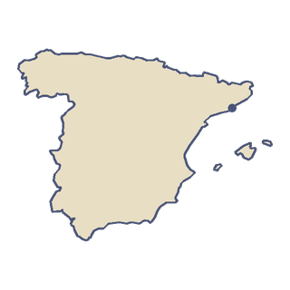

欧洲
西班牙
西班牙占据了伊比利亚半岛的大部分，在大西洋和地中海之间，还包括巴利阿里群岛和加那利群岛。它的联合国教科文组织世界遗产几乎比任何国家都多。国旗是红色和黄色的。
“我想要一对像枫树种子一样会转的翅膀。”
- 1923 年，胡安·德拉谢尔瓦在马德里附近驾驶他的旋翼机起飞。这种飞机靠自由旋转的桨叶飞起来，就像一颗枫树种子。
- 加那利群岛特内里费岛上的泰德火山高 3715 米，是西班牙最高的山。

国土
西班牙中部大部分是一片高原，叫梅塞塔高原（Meseta Central），海拔大多在 600 至 800 米。塔霍河是伊比利亚半岛最长的河流。它从特鲁埃尔的山区出发，流经托莱多，在葡萄牙的里斯本注入大西洋，全长约 1007 公里。西班牙还包括北非的两座城市：休达和梅利利亚。在巴塞罗那所在的加泰罗尼亚，加泰罗尼亚语和西班牙语都是官方语言。
出行
西班牙的第一条高速铁路从马德里通到塞维利亚，在 1992 年 4 月开通，为的是当年在塞维利亚举办的世界博览会。如今高速铁路网全长约 3970 公里，是欧洲最长的，在世界上仅次于中国，排第二。从 2008 年起，高速列车连接马德里和巴塞罗那，不停站跑完 621 公里只要 2 小时 30 分钟。
饮食
西班牙海鲜饭（paella）来自加泰罗尼亚南边的巴伦西亚地区。paella 这个词在巴伦西亚语和加泰罗尼亚语里是「煎锅」的意思，因为它是用一种又宽又浅的锅做的。锅底那层酥脆的米饭叫 socarrat。在巴塞罗那，一道简单的家常菜是番茄面包（pa amb tomàquet）：面包用新鲜番茄擦过，再淋上橄榄油、撒上盐。西班牙的橄榄油产量比其他任何国家都多，大部分产自安达卢西亚。
游客
2025 年，西班牙接待了约 9700 万外国游客，在所有国家中排第二。2024 年，巴塞罗那是西班牙游客第二多的城市，仅次于马德里。